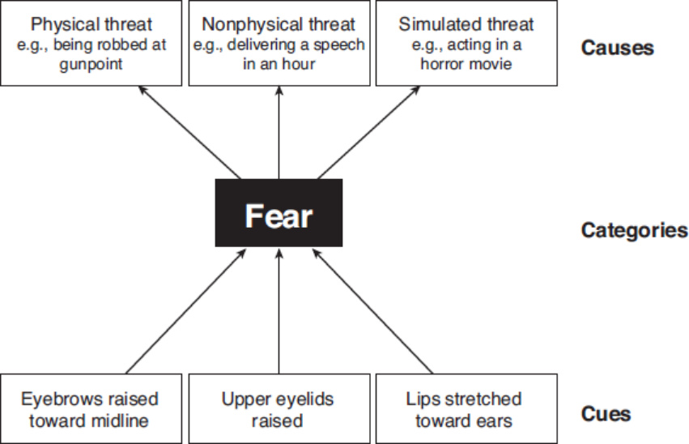
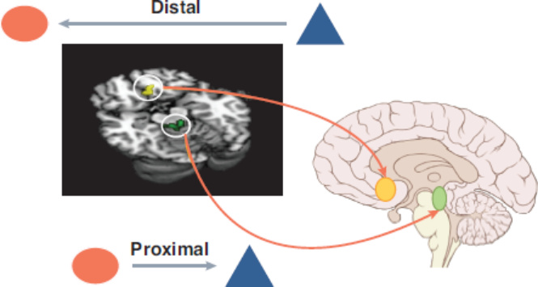
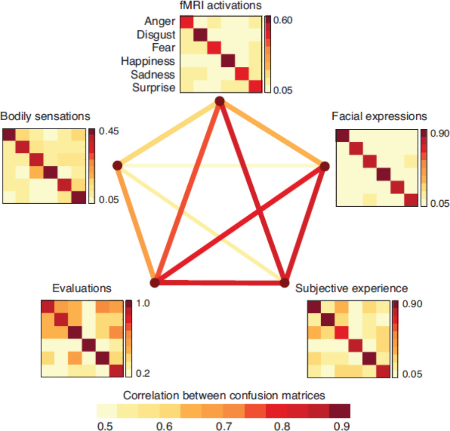

Chương 9 — Thần Kinh Học Cảm Xúc Ở Con Người
Chương 9 — Thần Kinh Học Cảm Xúc Ở Con Người
Các Nghiên Cứu fMRI Về Cảm Xúc: Logic Và Thách Thức
Sở hữu một công cụ như fMRI là một chuyện, còn thiết kế một thí nghiệm lại là chuyện khác. Ngay cả khi tạm gác hết mọi vấn đề về việc tách tín hiệu khỏi nhiễu, tính toán các đại lượng phái sinh có ý nghĩa, và dùng các công cụ thống kê để rút ra kết luận đáng tin cậy, vẫn còn những thách thức về cách thiết kế một thí nghiệm để thao túng các trạng thái cảm xúc. Trong các nghiên cứu ở động vật, chúng ta có thể trình cho con vật một kích thích có ý nghĩa sinh thái, như mùi của một động vật săn mồi, và có thể khảo sát trạng thái cảm xúc bằng cách theo dõi hành vi, như đứng chết trân hay bỏ chạy, cùng với các phép đo nội tiết (hormone) và tự chủ (huyết áp, giãn đồng tử).
Không việc nào trong số này dễ thực hiện ở con người; về nguyên tắc chúng ta không thể đối mặt người ta với những kích thích như động vật săn mồi, và ngay cả nếu có thể, họ sẽ biết rằng đó chỉ là một thí nghiệm và sẽ không phản ứng theo kiểu hợp lệ về mặt sinh thái. Chúng ta cũng nói chung không thể khiến người ta la hét hay bỏ chạy, một phần vì lý do đạo đức, nhưng cũng vì fMRI cực kỳ nhạy với chuyển động (một trong những lý do khiến việc làm fMRI ở động vật còn thức rất khó). Ngay cả những chuyển động rất nhỏ do tim đập hay thở của ai đó cũng đưa vào tín hiệu fMRI một lượng nhiễu đáng kể đòi hỏi những hiệu chỉnh khó khăn; việc ai đó gào thét chắc chắn sẽ phá hỏng phép đo. Mặt khác, cũng có thể một phần nhiễu chuyển động này tự nó lại là tín hiệu mang thông tin — nếu bạn run rẩy, dù chỉ nhẹ, điều đó sẽ hiện lên trong tín hiệu fMRI, và, trong trường hợp khảo sát một trạng thái sợ hãi, thực sự mang thông tin về trạng thái cảm xúc (nhưng nó sẽ không phải là một phép đo sinh học thần kinh). Nhân tiện, gần đây người ta đã tìm thấy một thứ gì đó tương tự — bạn có thể nhận diện từng cá nhân và dự đoán nhiều khác biệt cá nhân thú vị (như trí tuệ) chỉ từ hồ sơ fMRI trạng thái nghỉ của họ, nhưng hóa ra một phần thông tin đó có thể đến từ kiểu mẫu mà người ta chuyển động trong máy quét (do thở, gãi,
v.v.). Những chuyển động này tạo ra các hiệu ứng giả chuyển động trong tín hiệu fMRI có thể lớn bằng, hoặc lớn hơn, các tương quan huyết động thực sự của xử lý nơ-ron mà ta muốn đo.
Logic nền tảng của một nghiên cứu fMRI là đưa vào thí nghiệm một sự đối lập (hay khác biệt) về lượng hoặc chất của biến số quan tâm. Như vậy, bạn sẽ muốn đối lập một điều kiện có trạng thái cảm xúc với một điều kiện không có trạng thái cảm xúc, và xem sự khác biệt này đạt ngưỡng thống kê ở đâu về mặt kích hoạt trong não. Nếu bạn tìm thấy một khác biệt, bạn có việc để làm rồi; nếu không tìm thấy, bạn không thể kết luận điều gì, vì điều đó có thể đơn giản nghĩa là bạn không có đủ năng lực thống kê để phát hiện một khác biệt. Nhiều nghiên cứu có một phiên bản tham số hóa hơn của kiểu đối lập tất-cả-hay-không-gì đơn giản như vậy; chúng so sánh một điều kiện có nhiều cảm xúc với một điều kiện có ít, hoặc cho cảm xúc biến thiên theo cách tham số hóa có bậc qua các lần thử có thể lượng hóa bằng một hàm số nào đó. Chẳng hạn, bạn có thể biến thiên tham số mức sợ hãi mà người ta trải qua, hoặc một kích thích trông đáng sợ thế nào, hoặc người ta buộc phải nghĩ về nỗi sợ bao nhiêu, hoặc thậm chí mức thay đổi của một số tín hiệu cơ thể nhất định (như huyết áp hay nhịp tim) để đáp ứng với một kích thích thuộc về cảm xúc.
Một thiết kế fMRI gọi là “liên quan sự kiện” (event-related) sẽ biến thiên các tham số của bạn ở từng lần thử, nhưng điều này có thể không phải ý hay nếu bạn đang nghiên cứu cảm xúc, vì các cảm xúc chậm quá (một lần thử thường kéo dài khoảng 3 đến 10 giây). Thay vào đó, bạn có thể muốn biến thiên tham số quan tâm theo vài mức theo từng khối, mỗi khối dài chừng một phút. Bạn sẽ cần khớp đặc tính “kéo dài” của cảm xúc cụ thể đang được nghiên cứu với khoảng thời gian bạn thu thập dữ liệu fMRI (độ dài khối của bạn).
Một khi đã có một nghiên cứu fMRI được tham số hóa như vậy, bạn có thể lấy hàm số mô tả cách cảm xúc thay đổi như được lượng hóa bởi tham số của bạn (đo từ thứ gì đó khác hoạt động não, như các đánh giá bằng lời hay một phép đo hành vi khác), và hỏi ở đâu trong não có một thay đổi tương ứng về kích hoạt được khớp bởi cùng hàm số đó (hoặc hàm số đó nhân với một phép biến đổi hợp lý). Đại khái, bạn quan tâm câu hỏi sau: khi bạn thay đổi điều gì đó (được đo) về cảm xúc (ví dụ, báo cáo cường độ hay tính tích cực–tiêu cực), thì
thay đổi tương ứng trong hoạt động não mà bạn có thể bắt được bằng fMRI là gì?
Có vẻ tương đối đơn giản để quyết định dùng kích thích nào để khơi dậy một trạng thái cảm xúc, nhưng thực ra hoàn toàn không phải vậy. Ngay cả trong các nghiên cứu ở động vật, các dòng chuột cận huyết có thể không phản ứng với mùi của động vật săn mồi theo cách mà chuột hoang dã sẽ phản ứng, và có sự biến động đáng kể giữa các con vật, giữa các phiên thử nghiệm trong cùng một con vật, và giữa các phòng thí nghiệm cố gắng tái lập hiệu ứng của các kích thích khơi dậy cảm xúc bẩm sinh. Tình hình còn tệ hơn ở người; thực tế không ai phản ứng cùng một cách với một kích thích khơi dậy cảm xúc, và thậm chí không rõ một kích thích “hợp lệ sinh thái” chính xác là gì. Một con hổ hoang dã? Một con hổ trong sở thú? Một bộ phim, tấm ảnh hay bức hoạt hình về con hổ? Vấn đề là người ta nghĩ về các kích thích, về thí nghiệm, về kỳ vọng của người thí nghiệm, về kỳ vọng của chính họ đối với cảm xúc, v.v., làm cho các kích hoạt não được tạo ra trở nên phức tạp vô cùng.
Khó khăn trong việc thiết lập một thí nghiệm rõ ràng và hợp lệ còn bị khuếch đại bởi thực tế rằng các nghiên cứu về cảm xúc ở người thường không tập trung vào một tập nhỏ các cảm xúc cơ bản, mà lại nhảy thẳng vào điều tra những cảm xúc phức tạp hơn như xấu hổ, tội lỗi, tự hào, niềm vui cười cợt vào bất hạnh của người khác (Schadenfreude) và tình yêu, và nhiều nữa. Có những nghiên cứu dùng các từ chỉ cảm xúc mà nghĩa của chúng không phải người thí nghiệm cũng không phải đối tượng nào hiểu đầy đủ. Hơn nữa, các cảm xúc được điều tra thường khá nhẹ về cường độ, và các nghiên cứu đòi hỏi ngôn ngữ, trí nhớ và suy luận để gợi lên cảm xúc, hay một suy nghĩ về cảm xúc. Vì vậy, ngay từ đầu, đã có một thách thức lớn về tính hợp lệ khái niệm (hộp 8.1): làm sao bạn biết bạn đang nghiên cứu một cảm xúc, làm sao bạn biết bạn đang nghiên cứu cảm xúc nào, và làm sao bạn biết khía cạnh nào của xử lý cảm xúc được phản ánh trong phép đo não của bạn? Mặc dù điểm này cũng áp dụng cho các nghiên cứu ở động vật, nó càng cấp bách hơn ở người.
Những Bài Học Từ Hai Ví Dụ: Âm Nhạc Và Khuôn Mặt
Hãy nhìn vào thách thức này đối với hai lớp kích thích đã được dùng trong nhiều nghiên cứu fMRI về cảm xúc. Lớp đầu tiên là âm nhạc. Khi bạn phát một số loại âm nhạc nhất định cho một số người nhất định nghe, họ sẽ nói với bạn rằng nó
khiến họ cảm thấy những cảm xúc mạnh. Âm nhạc, nhịp điệu giọng nói (prosody), và các kích thích thính giác khác có thể khá hiệu quả trong việc khơi dậy một cảm xúc, mặc dù chúng thường còn hiệu quả hơn nữa khi kết hợp với kích thích thị giác (chẳng hạn như trong một bộ phim có nhạc nền). Khi bạn hỏi đối tượng đây cụ thể là những cảm xúc gì, việc nhận được câu trả lời rõ ràng khó hơn nhiều (dù bạn có thể hướng họ đi đúng hướng nếu bạn phát cho họ những loại âm nhạc mà họ có những liên tưởng văn hóa cụ thể, và bạn cho họ một danh sách ngắn các từ chỉ cảm xúc để chọn từ phù hợp nhất). Khi bạn cố đo các hành vi liên quan đến những cảm xúc này, việc này còn khó hơn nữa.
Một nghiên cứu đặc biệt khéo léo trong việc dùng một phản ứng hành vi cụ thể; các nhà nghiên cứu đã phát âm nhạc cho đối tượng nghe khiến họ báo cáo cảm thấy run rẩy dọc sống lưng (Blood và Zatorre 2001). Nghiên cứu này thực ra dùng chụp phát xạ positron (PET), mà về nhiều phương diện có lẽ phù hợp hơn fMRI vào thời điểm đó (PET chậm hơn fMRI nhiều, và do đó khớp hơn với dòng thời gian của một cảm xúc; nó có thể có tỉ lệ tín hiệu trên nhiễu tốt hơn; và nó có thể thu tín hiệu từ các cấu trúc dưới vỏ tốt hơn). Nghiên cứu tìm thấy kích hoạt ở một số vùng được cho là liên quan đến phần thưởng và cảm xúc, bao gồm hạch hạnh nhân, vỏ não hốc mắt trước trán, và đảo não (so sánh hình 8.1). Một điểm mạnh trong thiết kế nghiên cứu này là nó có thể dùng chính cùng một kích thích cảm giác (cùng một bản nhạc) để khiến một người, nhưng không phải người khác, cảm thấy run rẩy dọc sống lưng; theo cách đó, kích hoạt não tương quan với cảm giác run rẩy dọc sống lưng không bị lẫn với một khía cạnh nào của kích thích cảm giác (như chỉ đơn giản là nhạc to hơn, hay một âm thanh hay hòa âm cụ thể). Tuy nhiên, điều này đánh đổi bằng một phép đo cảm xúc khá khác thường — đánh giá chủ quan của người ta về cảm giác run rẩy dọc sống lưng. Để tăng tính hợp lệ của phép đo này, các nhà nghiên cứu cũng đo các biến tâm sinh lý và thấy rằng khi đối tượng báo cáo cảm thấy ớn lạnh, họ cũng có nhịp tim tăng, thay đổi hô hấp, và thay đổi điện cơ (EMG, một phép đo việc tạo biểu cảm khuôn mặt).
Âm nhạc và các kích thích thính giác thuộc về cảm xúc khác kích hoạt các vỏ não thính giác — vốn sẽ xử lý bất kỳ loại âm thanh nào — nhưng chúng cũng kích hoạt các vùng não được cho là quan trọng đối với trải nghiệm cảm xúc, như đảo não (hình 8.1). Chúng ta đã từng gặp đảo não (chẳng hạn, liên quan đến
ghê tởm) và nó hóa ra được kích hoạt bởi nhiều kích thích thuộc về cảm xúc, và cũng bởi xúc cảm da lành và đau đớn cũng như bởi các vị khác nhau (ngọt, đắng, v.v.). Điều này có lý, vì đảo não chứa một vỏ não cảm giác cảm nhận nội tạng biểu diễn nhận thức của chúng ta về trạng thái cơ thể mình, như chúng ta đã đề cập trong chương 8. Cảm nhận điều gì đó trong cơ thể, chú ý đến điều gì đó trong cơ thể, hay chỉ đơn giản là nhạy cảm với điều gì đó trong cơ thể, tất cả đều làm tăng kích hoạt ở đảo não. Quả thực, các nghiên cứu khác đã cho thấy độ nhạy mà người ta có thể phát hiện các thay đổi trong cơ thể mình, như nhịp tim của chính họ, tương quan với kích hoạt của đảo não. Tất cả những phát hiện này sẽ gợi cho bạn nhớ lại lý thuyết cảm xúc mà William James từng theo đuổi, mà chúng ta đã nhắc trong các chương trước. James nghĩ rằng một phản ứng thuộc về cảm xúc trong cơ thể chúng ta được não cảm nhận lại và là nền tảng cho cảm giác có ý thức của chúng ta về cảm xúc. Tuy nhiên, một câu hỏi lớn vẫn còn bỏ ngỏ bởi nghiên cứu về ớn lạnh do âm nhạc gây ra. Trong khi các tham gia rõ ràng cảm nhận điều gì đó, liệu đó có phải là một cảm xúc? Đó là cảm xúc nào? Những đặc tính nào của các cảm xúc mà chúng ta đã liệt kê trong hình 3.2 được áp dụng?
Các nghiên cứu dùng các kích thích như âm nhạc hay khuôn mặt để thăm dò xử lý cảm xúc phải đối mặt với một câu hỏi khó nhằn về việc người ta thực sự làm gì trong thí nghiệm. Trong nhiều trường hợp, người ta được cho xem các cảnh hay khuôn mặt, được kể chuyện, hoặc nghe âm nhạc hay giọng nói, và được hỏi điều gì đó về cảm xúc. Chẳng hạn, một trong chúng tôi đã từng thực hiện một nghiên cứu trong quá khứ, trong đó chúng tôi phát âm nhạc cho mọi người nghe và hỏi họ, “đây là cảm xúc gì?” Nếu bạn suy nghĩ về điều đó, đó là một câu hỏi rất mơ hồ. Nó có thể yêu cầu đối tượng báo cáo về điều mà âm nhạc theo khuôn mẫu được định hướng để truyền đạt (chẳng hạn nó có thể nghe như nhạc nền cho một phim kinh dị), điều mà nhà soạn nhạc cảm thấy hay định hướng, điều mà các nhạc công cảm thấy hay định hướng, hoặc điều mà người nghe nghĩ hay cảm thấy khi nghe bản nhạc (điều này có thể cực kỳ mang tính cá nhân riêng biệt). Tất cả những câu hỏi này khác nhau khá nhiều.
Vì vậy, âm nhạc mang đến một pha trộn điểm mạnh và điểm yếu để điều tra cảm xúc: nó chắc chắn có thể khơi dậy những cảm giác mạnh ở những người cụ thể, nhưng cũng có thể không rõ nó tham gia vào những thành tố nào của xử lý cảm xúc, và không rõ nó có thể khơi dậy những cảm xúc cụ thể nào. Tùy vào nhiệm vụ và thiết kế của nghiên cứu chụp ảnh não, một thí nghiệm có thể bộc lộ kích hoạt tương quan với trải nghiệm một cảm xúc, hoặc với việc nghĩ về một phạm trù cảm xúc cụ thể. Những nhận xét tương tự cũng áp dụng cho các đoạn phim,
cũng thường được dùng trong các nghiên cứu về cảm xúc. Ở đây, có sẵn các dữ liệu chuẩn hóa tốt hơn về các cảm xúc mà người ta tự đánh giá là cảm thấy khi xem các đoạn phim (ví dụ, Gross và Levenson 1995). Tuy vậy, vẫn có những hiệu ứng lớn của sự quen thuộc, văn hóa, và khác biệt cá nhân, cũng như sự phức tạp chung của một kích thích phong phú, biến thiên theo thời gian. Như vậy, những yếu tố khơi dậy cảm xúc mạnh ở người, như âm nhạc hay phim, một phần vì chính sự phong phú của chúng, cũng có tính biến động đáng kể. Chúng ta không biết chính xác đối tượng đang xử lý gì khi được trình những kích thích này, và có lẽ có những khác biệt cá nhân lớn trong tất cả các xử lý liên quan đến cảm xúc mà họ thực hiện (nhưng về nguyên tắc chúng ta có thể tìm ra chúng được tạo ra ở đâu trong não). Việc tìm các kích thích để khơi dậy các trạng thái cảm xúc rõ ràng ở người theo một cách đồng nhất là khó khăn hơn nhiều, nhiều so với điều mà người ta có thể nghĩ ban đầu.
Một loại kích thích đơn giản hơn là những kích thích tĩnh, có thể dùng để thăm dò các phản ứng thuộc về cảm xúc khóa theo thời gian hơn và được cho là theo khuôn mẫu. Cho đến nay, loại kích thích phổ biến nhất trong các nghiên cứu cảm xúc ở người là các biểu cảm khuôn mặt. Điều này chủ yếu là nhờ những công trình trước đây có sức ảnh hưởng của nhà tâm lý học Paul Ekman, mà bạn có thể còn nhớ từ chương 1. Ekman lập luận rằng các biểu cảm khuôn mặt của con người có thể tín hiệu hóa các cảm xúc cơ bản cụ thể trong tất cả các nền văn hóa (Ekman 1994). Vì vậy, đây có vẻ là một loại kích thích đặc biệt đáng tin cậy, vì ai cũng đồng thuận về cảm xúc mà nó thể hiện. Đáng tiếc, đây cũng có vấn đề. Thứ nhất, tuyên bố của Ekman về nhận thức phổ quát các cảm xúc từ biểu cảm khuôn mặt đã được tranh luận sôi nổi (Fridlund 1994; Gendron và cộng sự 2014; Fernandez-Dols và Russell 2017), như chúng tôi đã ghi chú trong hộp 3.5. Thứ hai, cách các kích thích thường được trình trong các nghiên cứu fMRI (và cả các nghiên cứu hành vi nữa) hoàn toàn không hợp lệ sinh thái (chúng là những tấm ảnh đơn lẻ, dàn dựng, tĩnh của khuôn mặt trên màn hình máy tính, không có nền hay ngữ cảnh nào khác). Thứ ba, cũng như với âm nhạc, vẫn chưa rõ đối tượng thực sự đang làm gì khi họ nhìn những biểu cảm khuôn mặt này; họ có thể đang phân loại hay đặt tên cảm xúc hiển hiện trên khuôn mặt, vì điều này thường được yêu cầu trong các nhiệm vụ giao cho đối tượng; họ có thể làm điều đó bằng cách tự hỏi người hiển hiện trong ảnh đang cảm thấy gì (mà trong thực tế, không phải là cảm xúc hiển hiện, vì chúng thường là các biểu cảm thuộc về cảm xúc do diễn viên dàn dựng); hoặc họ có thể tự hỏi việc nhìn biểu cảm khuôn mặt này khiến chính họ cảm thấy thế nào (hoặc đồng cảm tưởng tượng họ sẽ cảm thấy ra sao nếu họ
trông giống người hiển hiện trong ảnh). Có lẽ họ đang làm một chút của tất cả những điều này. Chắc chắn rằng biểu cảm khuôn mặt là một loại kích thích khác hẳn so với âm nhạc hay phim, và sẽ cần rất nhiều bằng chứng nữa để lập luận rằng chúng khơi dậy bất kỳ trạng thái cảm xúc nào, và nếu có, đó là một cảm xúc nhạt hơn nhiều (chỉ nhìn một biểu cảm khuôn mặt của sợ hãi không thực sự khiến bạn sợ).
Hai thách thức nền tảng hiện rõ trong các nghiên cứu cảm xúc ở người vì thế là: các kích thích nhìn chung không hợp lệ sinh thái, và việc tách riêng các thành tố cụ thể của xử lý cảm xúc là rất khó. Tiếp theo chúng ta sẽ chuyển sang các nghiên cứu về cảm xúc ở người đã điều tra những khía cạnh cụ thể của xử lý thuộc về cảm xúc, cho chúng ta một cái nhìn tổng quan về các loại quá trình khác nhau, các cách tiếp cận để nghiên cứu chúng, và một góc nhìn sơ bộ về các cấu trúc não liên quan.
Quy Gán Cảm Xúc Cho Người Khác
Nhiều nghiên cứu đã tập trung vào cách chúng ta quy gán cảm xúc cho người khác, hoặc từ việc quan sát hành vi của họ, hoặc từ việc tìm hiểu điều gì đó về họ hay hoàn cảnh của họ. Do đó các nghiên cứu này tập trung vào đặc tính cảm xúc cuối cùng trong danh sách của chúng tôi ở hình 3.2: giao tiếp xã hội. Khả năng quy gán cảm xúc cho người khác phụ thuộc vào một mạng lưới các cấu trúc não tham gia vào vài quá trình khác nhau. Ở đầu vào, trước hết bạn cần hướng về và chú ý đến các dấu hiệu cảm giác cụ thể, như ai đó mỉm cười hay cau mày, cười hay khóc. Một khi đã nhận thấy các dấu hiệu này, chúng được xử lý tiếp, thường cùng với thông tin ngữ cảnh bổ sung, và sau đó có thể được phân loại vào một phạm trù cảm xúc (trong số các phạm trù khác): người kia được đánh giá là vui vẻ, hay sợ hãi, hay buồn, chẳng hạn (điều này thường bị áp đặt bởi nhiệm vụ mà đối tượng được yêu cầu thực hiện). Nhưng xử lý không dừng lại ở đó; bạn thường nghĩ thêm về lý do vì sao người kia có thể đang cảm thấy như vậy, về các nguyên nhân và giải thích cho cảm xúc. (Điều này đôi khi được gọi là “lý thuyết tâm trí” hay “mentalizing”.) Tùy vào bản chất của thông tin ban đầu sẵn có, bạn có thể bỏ qua một vài bước đầu và đi thẳng đến phân loại cảm xúc — ví dụ, khi bạn đọc một câu chuyện về ai đó, thay vì thực sự quan sát hay nghe họ. Bức tranh nhiều chuỗi này về cách bạn quy gán các cảm xúc và nguyên nhân của chúng cho người khác
được vẽ sơ đồ trong hình 9.1.

Hình 9.1: Quy gán các cảm xúc và nguyên nhân của chúng. Mặc dù việc quy gán cảm xúc cho người khác thường có vẻ diễn ra tức thời, nó gồm vài giai đoạn. Thứ nhất, bạn phải phát hiện các dấu hiệu nổi bật; trong ví dụ này, các dấu hiệu thị giác trên một khuôn mặt sợ hãi. Thứ hai, bạn suy ra một phạm trù cảm xúc, cùng với các khái niệm khác (như rằng người đó có thể sắp bỏ chạy). Thứ ba, bạn quy gán một tập hợp phức tạp các nguyên nhân. Trong thực tế, cả ba thành tố xử lý này tương tác với nhau. Chẳng hạn, các kỳ vọng về tầng quy gán cao nhất (nguyên nhân) đã có thể định hướng sự chú ý của chúng ta để tìm kiếm các dấu hiệu cụ thể cần phát hiện.
Các hệ não liên quan đến các giai đoạn xử lý khác nhau này đã được tìm ra khá chi tiết qua các nghiên cứu fMRI. Một số vùng then chốt được vẽ sơ đồ trong hình 9.2. Hạch hạnh nhân thường được kích hoạt gắn với việc phát hiện nhanh các dấu hiệu nổi bật — như phát hiện đôi mắt mở to trên một khuôn mặt tín hiệu hóa sợ hãi, nhất quán với dữ liệu từ các nghiên cứu về bệnh nhân có tổn thương hạch hạnh nhân, những người suy giảm khả năng chú ý đến các dấu hiệu này (hộp 8.2). Cùng làm việc với các vỏ não cảm giác, hạch hạnh nhân và các cấu trúc dưới vỏ khác (như nhân gối của đồi thị) giúp chúng ta hướng về và kéo sự chú ý của mình đến những khía cạnh của kích thích chứa thông tin liên quan đến cảm xúc. Một phần của việc phát hiện ban đầu này có thể khá thô, và có thể khá nhanh.

Hình 9.2: Các vùng não tham gia quy gán cảm xúc. Có nhiều cấu trúc hơn chỉ những cái được liệt kê ở đây, vốn chỉ nhằm nêu bật vài ví dụ. Theo một số lý thuyết, đảo não và các vỏ não liên quan cảm giác cơ thể khác (SI/SII; màu tím) đảm nhận quy gán cảm xúc bằng cách cho người quan sát cảm nhận cảm xúc mà họ thấy ở người kia, có thể cung cấp một mô tả phong phú hơn về cảm xúc đó sẽ cảm thấy ra sao thông qua việc mô phỏng nó trong người nhận. dmPFC: vỏ não trước trán lưng-trung vị. pSTS: rãnh thái dương trên sau. vlPFC: vỏ não trước trán bên-thất. aTC: vỏ não thái dương trước (còn gọi là cực thái dương). Tái hiện với sự cho phép từ Spunt và Adolphs 2017a.
Bước tiếp theo phức tạp hơn, vì chúng ta cần phân loại điều mình thấy vào một phạm trù cảm xúc. Có một số vùng não tham gia vào bước này, chẳng hạn các vùng biểu diễn thông tin cảm giác cấp cao hơn (ví dụ, thông tin về chuyển động sinh học có liên quan đến một cảm xúc, được xử lý ở rãnh thái dương trên sau [pSTS]), các vùng mà từ đó kiến thức khái niệm và từ vựng về phạm trù cảm xúc có thể được truy xuất (như các vỏ não ở thùy thái dương trước [aTC]), và các vùng tham gia vào các phản ứng đồng cảm với điều ta thấy (như đảo não, và các vỏ não cảm giác cơ thể liên quan [SI, SII]). Cuối cùng, quy gán nhân quả phức tạp nhất để giải thích vì sao người mà ta đang nhìn khuôn mặt lại hành xử như vậy, và vì sao họ có cảm xúc mà ta vừa phân loại, tham gia các vùng cụ thể ở vỏ não trước trán (vlPFC, dmPFC). Một trong số đó, vỏ não trước trán lưng-trung vị (dmPFC), có vẻ được kích hoạt một cách phổ quát mỗi khi chúng ta suy luận nhân quả — nó được kích hoạt không chỉ khi ta suy ra cảm xúc của người khác, mà cả khi ta suy ra cảm xúc trong các quan sát của mình về động vật (hoặc thậm chí trong
chính mình). Nó đã được kích hoạt trong não của Darwin khi ông thực hiện tất cả các quan sát về hành vi động vật vốn là nguồn gốc cho cuốn sách của ông, The Expression of the Emotions in Man and Animals (Biểu Hiện Cảm Xúc Ở Người Và Động Vật). Tổn thương vùng não này gây suy giảm khả năng suy ra cảm xúc của người khác. dmPFC cũng có vẻ được kích hoạt kém hơn ở các quần thể lâm sàng có khó khăn trong việc suy ra cảm xúc, như những người mắc tự kỷ.
Tất cả các nghiên cứu này đưa chúng ta trở lại một câu hỏi mà chúng ta đã nêu ở phần trước (xem thêm hộp 3.5). Chúng ta biết rằng người ta đang quy gán cảm xúc, và chúng ta biết điều gì đó về các giai đoạn khác nhau của các quá trình này. Nhưng người ta đang quy gán những cảm xúc nào? Điều gì tính là một quy gán cảm xúc “bình thường”, và điều gì cho phép chúng ta quyết định quy gán cảm xúc của một ai đó là đúng hay sai? Có vẻ như đơn giản lấy ý kiến của người thí nghiệm — người đang thực hiện quy gán cảm xúc riêng của mình về các kích thích dùng cho thí nghiệm — không phải là một thước đo khách quan lắm. Một số nghiên cứu gần đây đã dùng phân tích tương đồng biểu diễn (chương 8) để giải quyết câu hỏi này.
Chụp Ảnh Não Các Khái Niệm Cảm Xúc
Hãy nhìn vào một nghiên cứu như vậy, do Rebecca Saxe và các đồng nghiệp tại MIT thực hiện (đây là cùng người mà chúng ta đã thấy cùng đứa bé của bà trong máy quét ở hình 1.1). Nghiên cứu của họ minh họa việc áp dụng các không gian tương đồng, và các cách tiếp cận đa biến (Skerry và Saxe 2015). Nghiên cứu sử dụng phân tích tương đồng biểu diễn mà chúng ta đã mô tả ở chương trước, và hỏi liệu nó có thể được dùng để hiểu cách người ta phân loại các cảm xúc hay không — liệu họ có biểu diễn chúng trong một không gian hai chiều của tính tích cực–tiêu cực và sự hưng phấn, một sơ đồ tâm lý phổ biến mà chúng ta đã nhắc trong chương 3, hay họ ánh xạ chúng vào sáu cảm xúc “cơ bản” mà các nhà tâm lý học như Paul Ekman đã đề xuất (hạnh phúc, sợ hãi, giận dữ, v.v.), hay họ lắp ráp chúng từ một tập thuộc tính lớn hơn, như các lý thuyết thẩm định tâm lý đề xuất? (chúng ta sẽ bàn thêm về các lý thuyết thẩm định trong chương 10). Các nhà nghiên cứu đặt ra nhằm trả lời những câu hỏi này bằng thí nghiệm được vẽ sơ đồ trong hình 9.3.

Hình 9.3: Phân tích tương đồng biểu diễn của các khái niệm cảm xúc. Hình vẽ sơ đồ dòng chảy của một thí nghiệm dùng RSA đa biến để hỏi cách người ta khái niệm hóa các cảm xúc, từ việc đọc các kịch bản viết ngắn (Skerry và Saxe 2015). Xem phần văn bản để biết chi tiết. In lại với sự cho phép từ Dubois và Adolphs 2015.
Nghiên cứu này là về cách người ta quy gán cảm xúc cho người khác, và thậm chí cụ thể hơn, là về cách người ta quy gán cảm xúc cho người khác từ các mô tả về những tình huống mà con người thấy mình ở trong đó. Vì vậy, điều này hơi khác với các ví dụ trước của chúng tôi, nơi chúng ta lấy trường hợp quy gán cảm xúc từ quan sát trực tiếp con người (ví dụ, biểu cảm khuôn mặt của họ). Một lần nữa, nghiên cứu không phải là về việc thực sự có một cảm xúc theo bất kỳ nghĩa nào, mà là về cách kiến thức khái niệm về các cảm xúc được biểu diễn. Trong nghiên cứu, các tham gia trong máy quét được trình những tia chuyện ngắn (cột bên trái cùng) mô tả các tình huống gắn chặt với những cảm xúc cụ thể. Những tia chuyện này đã được chọn kỹ lưỡng dựa trên các đánh giá cảm xúc do một nhóm đối tượng độc lập cung cấp, những người được kiểm tra trước qua internet. Mỗi cảm xúc có vài tia chuyện, như thể hiện bởi chồng các câu chuyện trong cột bên trái, để các nhà nghiên cứu có thể nhìn vào kiểu mẫu kích hoạt não mà tất cả các câu chuyện cho một cảm xúc cụ thể chia sẻ chung, thay vì lẫn cảm xúc với nội dung cụ thể của bất kỳ câu chuyện đơn lẻ nào. Các tham gia không được thấy các từ chỉ cảm xúc, chỉ các tia chuyện ngắn. Kiểu mẫu kích hoạt não được khơi dậy khi đọc
những tia chuyện cho mỗi cảm xúc khác nhau sau đó có thể được đem đi phân tích tương đồng biểu diễn (RSA) như chúng ta đã mô tả trong chương 8 (đây là hàng dưới cùng, minh họa ví dụ RSA áp dụng cho một vùng cụ thể trong não, vỏ não trước trán lưng-trung vị, DMPFC).
Đó là chuyện dữ liệu não. Loại dữ liệu còn lại là các đánh giá tâm lý, thu được cho chính những tia chuyện đó. Ở đây, một nhóm đối tượng khác được yêu cầu tạo ra các đánh giá (không trong máy quét, mà cũng qua internet, dùng một nền tảng gọi là Mechanical Turk) ánh xạ các cảm xúc vào mỗi không gian tương đồng (hệ tọa độ) trong ba không gian. Một không gian có 38 chiều (trục) mô tả nhiều đặc điểm khác nhau của các tình huống thuộc về cảm xúc, bao gồm nhiều đặc điểm mà các lý thuyết thẩm định đã đề xuất thực sự được thẩm định khi một trạng thái cảm xúc thật được khơi dậy (“thẩm định 38”), một có sáu cảm xúc mà Paul Ekman đề xuất (“cảm xúc cơ bản”), và một có hai (“tính tích cực–tiêu cực/sự hưng phấn”). Câu hỏi chính bây giờ là: với không gian tương đồng tâm lý nào trong ba cái này thì RSA não tương ứng tốt nhất? Lưu ý rằng các đối tượng trong máy quét chỉ đọc những tia chuyện, và rằng các đánh giá tâm lý đều đến từ một nhóm đối tượng riêng biệt. Vậy, khi chỉ đơn giản nằm trong máy quét và nghĩ về cảm xúc gắn với mỗi tia chuyện, não đã biểu diễn các cảm xúc khác nhau như thế nào? Theo tính tích cực–tiêu cực/sự hưng phấn? Theo các cảm xúc cơ bản? Hay theo 38 chiều thẩm định khác nhau?
Có một sự tương ứng nào đó giữa ma trận bất tương đồng biểu diễn não (RDM) và mỗi không gian tâm lý trong ba cái (cột bên phải cùng), nhưng không gian 38 chiều từ lý thuyết thẩm định khớp dữ liệu fMRI tốt nhất trong nghiên cứu này, ngay cả khi người ta đã tính đến hiệu ứng của việc đơn thuần có số chiều lớn hơn. Sự khớp tốt nhất từ mô hình thẩm định này có lẽ do bản chất của các kích thích: chúng buộc đối tượng thẩm định tình huống theo vài chiều, vì đó là cách các câu chuyện được trình. Cũng có thể là, nếu đối tượng được cho xem các biểu cảm khuôn mặt của cảm xúc thay vào đó, và chúng tôi thực hiện cùng loại phân tích trên dữ liệu đó, thì các không gian sáu chiều hay hai chiều sẽ khớp tốt nhất. Nhưng điểm bao trùm chỉ đơn giản là minh họa cách dữ liệu fMRI, và các đánh giá tâm lý, có thể được dùng để so sánh các không gian tương đồng tâm lý và thần kinh cho các khái niệm cảm xúc. Lưu ý rằng trong nghiên cứu này, một lần nữa, vỏ não trước trán lưng-trung vị được kích hoạt một cách đáng tin cậy
khi quy gán các cảm xúc — một vùng não mà chúng ta đã thấy trong hình 9.2.
Còn nhiều nghiên cứu fMRI khác đã điều tra cách người ta quy gán và nghĩ về các cảm xúc. Một dòng công việc rất quan trọng còn phải làm là mô tả các khác biệt cá nhân, và quả thật các khác biệt văn hóa, trong cách não biểu diễn các cảm xúc. Tất cả các nghiên cứu mà chúng tôi đã mô tả trước đây đều dùng các đối tượng có học vấn, phương Tây (thường là sinh viên đại học ở Hoa Kỳ). Những người khác nhau đưa ra những phán đoán hơi khác nhau về cảm xúc mà một người khác đang cảm thấy, và các nền văn hóa khác nhau còn hơn thế nữa. Ví dụ, các nền văn hóa châu Á và phương Tây nhìn vào các phần khác nhau của khuôn mặt để đưa ra phán đoán về cảm xúc được biểu lộ. Người châu Á nhìn vào mắt nhiều hơn và vào miệng ít hơn, một phát hiện thậm chí được phản ánh trong các biểu tượng cảm xúc phổ biến nhất được dùng ở các nền văn hóa khác nhau này (Caldara 2017). Sẽ rất thú vị khi chạy lại nghiên cứu trên trong một nền văn hóa hoàn toàn khác. Chúng tôi sẽ cá rằng sẽ có các khác biệt trong cách người từ một nền văn hóa khác diễn giải các tia chuyện, và trong cách họ đánh giá các cảm xúc mà họ nghĩ những người trong các câu chuyện đang cảm thấy. Điều này nên được phản ánh trong các kích hoạt não của họ. Các nghiên cứu hành vi về những khác biệt như vậy là một khối lượng công việc lớn trong tâm lý học, và đã như vậy từ lâu, nhưng cơ sở thần kinh của chúng cho đến nay mới chỉ hiếm hoi được điều tra.
Vậy, những loại nghiên cứu này là các nghiên cứu về cách người ta nghĩ về cảm xúc. Chúng là các nghiên cứu về kiến thức ngữ nghĩa, hay về các khái niệm mà người ta có về các cảm xúc. Chúng cũng sẽ có quan hệ gần (dù không đồng nhất) với các từ mà người ta có để mô tả cảm xúc. Đây là một dòng công việc quan trọng, nhưng dĩ nhiên quan trọng là phải phân biệt nó với việc điều tra các trạng thái cảm xúc như vậy — nó thực sự có vẻ là một chủ đề rất khác với các nghiên cứu về cảm xúc ở động vật mà chúng ta đã điểm lại trước đây. Có lẽ, nhiều nghiên cứu trong số này, chắc chắn là nghiên cứu trong hình 9.3, không thể thực hiện ở động vật không phải người — nhưng động vật không phải người chắc chắn có các trạng thái cảm xúc. Một con chuột có thể không thể nghĩ về, hay có một khái niệm (huống chi một từ) cho “sợ hãi”. Nhưng nó có thể ở trong một trạng thái cảm xúc của sợ hãi. Có nhiều nghiên cứu về các vùng thần kinh tham gia vào các trạng thái cảm xúc ở chuột (ví dụ, hạch hạnh nhân và vùng dưới đồi, những cấu trúc mà chúng ta đã gặp trong chương 6), nhưng không có nghiên cứu nào về cách chuột có thể quy gán cảm xúc cho chuột khác hay cho người (dù có một số ít nghiên cứu thú vị
về thần kinh học gợi ý rằng các cảm xúc có thể được giao tiếp mang tính xã hội ngay cả ở chuột). Sẽ rất khó để biết làm cách nào thậm chí thu được các phép đo hành vi từ động vật để bảo đảm rằng chúng đang thực hiện quy gán cảm xúc. Vì vậy, ở mức độ lớn, nghiên cứu sinh học thần kinh về quy gán cảm xúc, hay về các khái niệm cho cảm xúc, là đặc hữu của con người và không có đối ứng ở động vật. (Có một cuộc tranh luận đang diễn ra về khả năng thực hiện một số quy gán xã hội, thường gọi là “lý thuyết tâm trí”, ở các động vật khác, đặc biệt là linh trưởng — nhưng đây có lẽ là một khả năng khác hẳn với quy gán cảm xúc của con người, và hầu như không có gì được biết về cơ chất thần kinh của nó ở động vật.)
Có một khía cạnh thú vị đối với chủ đề của phần này: quy gán các cảm xúc và nghĩ về các cảm xúc cũng chính xác là điều mà nhà khoa học cảm xúc làm! Vậy, nếu chúng ta tập hợp một nhóm các nhà thần kinh học làm công việc về cảm xúc, chúng ta có thể đưa họ vào máy quét nếu chúng ta quan tâm điều tra cách não của họ thực hiện các quy gán khoa học về trạng thái cảm xúc từ các loại dữ liệu khác nhau. Điều này thực ra không ngớ ngẩn như nghe có vẻ. Người ta có thể tưởng tượng việc đối lập hai nhóm: lấy các nhà tâm lý học chỉ làm việc về cảm xúc con người, và lấy các nhà sinh học thần kinh cơ bản chỉ làm các nghiên cứu động vật ở tầng mạch. Trình cho họ các loại kích thích khác nhau trên cơ sở mà người ta có thể suy ra các trạng thái cảm xúc (các đồ thị kết quả thí nghiệm, các quan sát hành vi động vật và con người) và hỏi họ thực hiện những loại quy gán gì về mặt hành vi, và họ tham gia những hệ não nào khi thực hiện các quy gán này. Quả thật, người ta thậm chí có thể thực hiện một nghiên cứu trong cùng một chủ thể rất thú vị: nếu bạn đặt các tác giả của cuốn sách này vào máy quét, bạn có thể yêu cầu chúng tôi nhìn các hành vi động vật trong khi đội mũ nhà khoa học và cố đánh giá liệu đây có phải là các cảm xúc, hoặc bạn có thể yêu cầu chúng tôi đơn giản nghĩ về những con vật này như thú cưng của chúng tôi. Có lẽ chúng tôi sẽ đưa ra phán đoán hơi khác nhau trong hai trường hợp, và não của chúng tôi nên phản ánh sự khác biệt đó.
Cảm Nhận Các Cảm Xúc
Một dòng công việc lớn khác ở người, mà cũng một lần nữa không có đối ứng động vật đúng nghĩa, là điều tra trải nghiệm có ý thức của các cảm xúc: người ta cảm thấy gì khi họ ở trong một trạng thái cảm xúc. Đây là một chủ đề lớn và
phức tạp, vì nó chắc chắn cũng liên quan đến các quy gán và các khái niệm và các từ — những quá trình mà chúng ta vừa điểm lại trong phần trước — chỉ khác là áp dụng cho chính mình thay vì cho người khác. Có thể lập luận rằng đây là chủ đề cốt lõi mà các nghiên cứu về “cảm xúc” ở con người đã quan tâm, một cách tường minh hay ngầm định (dù, một lần nữa, hầu hết các nghiên cứu đã không cố gắng gỡ rối trải nghiệm các cảm xúc khỏi bất kỳ thành tố nào khác của xử lý cảm xúc).
Điểm quan trọng đầu tiên cần nêu là, khác với các khái niệm cảm xúc, hay các tên gọi cho cảm xúc (những điều chúng ta đã bàn trong phần trước), mà không thể được điều tra ở động vật vì chúng không có chúng, các trải nghiệm cảm xúc thì về nguyên tắc có thể, một cách khá hợp lý, được điều tra ở động vật. Như chúng tôi đã ghi chú trước đây (chương 2 và 5), không có lý do để nghĩ rằng động vật không có các trải nghiệm có ý thức về cảm xúc — chỉ là chúng ta không có một phép đo phụ thuộc tốt để phát hiện chúng (không có tính hợp lệ khái niệm; hộp 8.1). Nghĩa là, có vẻ khó tin rằng động vật có các khái niệm về cảm xúc và nghĩ về các cảm xúc, nhưng có vẻ khá hợp lý rằng chúng có thể cảm nhận chúng. Nếu chúng ta thừa nhận rằng các động vật cấp cao có thể cảm nhận bất cứ điều gì, như cảm nhận đau đớn, thì chắc chắn chúng ta nên thừa nhận rằng chúng cũng có thể cảm nhận các cảm xúc, ít nhất về nguyên tắc.
Chúng ta sẽ bàn về các cảm giác thêm một chút trong chương 10. Ở đây chúng ta chỉ muốn nêu hai điểm: một nhận xét về loại dữ liệu thường được dùng để nghiên cứu chúng, và một ví dụ. Dữ liệu thường dùng để nghiên cứu các cảm giác là các báo cáo bằng lời mà người ta đưa ra. Đây chắc chắn là một nguồn dữ liệu thú vị về các cảm xúc, nhưng chúng đâu có phải nguồn dữ liệu duy nhất, và chúng gặp vấn đề vì vài lý do. Một lý do là vẫn chưa rõ người ta đang báo cáo về chính xác điều gì khi được yêu cầu báo cáo họ cảm thấy thế nào. Người ta có lẽ đưa ra các đánh giá là một hỗn hợp giữa khả năng của họ để đánh giá các cảm giác của chính mình, kỳ vọng của họ về điều mà người thí nghiệm muốn họ báo cáo, và phán đoán của họ về điều mà người nói chung có thể cảm thấy hay báo cáo. Điều này không có nghĩa là không thể thu được các đánh giá bằng lời rất đáng tin cậy về các cảm giác (chẳng hạn, bằng cách tìm sự nhất quán qua nhiều câu hỏi); cũng có lợi thế của lấy mẫu trải nghiệm qua báo cáo bằng lời trong đời sống hàng ngày. Nhưng chúng tôi tin rằng các đánh giá bằng lời nên được bổ sung bởi các phép đo hành vi khác để lượng hóa các cảm giác, và chúng tôi tin rằng chúng không thiết yếu để đo các cảm giác, do
đó các cảm giác về nguyên tắc có thể được nghiên cứu bằng các phép đo khác ở động vật không dùng lời nói (và ở con người không dùng lời nói).
Trong hình 9.3 chúng ta đã thấy một ứng dụng tinh vi của fMRI đa biến vào điều tra cách các đối tượng người quy gán cảm xúc cho người khác. Phân tích mẫu đa voxel và RSA cũng đã được dùng để điều tra các cảm giác thuộc về cảm xúc. Trong vài nghiên cứu, một loạt các kích thích phức tạp như âm nhạc hay video đã được dùng để khơi dậy các phạm trù cảm xúc cụ thể, như chúng tôi đã mô tả ở đầu chương này, và giải mã đa voxel sau đó được dùng để xây dựng một mô hình mô tả các kiểu mẫu kích hoạt mà tốt nhất phân biệt các cảm xúc khác nhau. Dùng loại khung dự đoán mà chúng tôi đã nhắc trước đây (nơi chỉ một phần dữ liệu được dùng để xây dựng mô hình, mà các dự đoán của nó sau đó được kiểm tra trên tập dữ liệu còn lại), các mô hình phân loại xây từ dữ liệu fMRI có thể được dùng để dự đoán cảm xúc cụ thể nào mà một đối tượng đã cảm thấy, từ kiểu mẫu kích hoạt não được quan sát của họ.
Chẳng hạn, trong một nghiên cứu khéo léo, các nhà nghiên cứu đã huấn luyện một mô hình như vậy để dự đoán các kiểu mẫu não phân biệt một tập các cảm xúc cơ bản, dùng hoạt động được khơi dậy bởi phim và âm nhạc. Sau đó họ áp dụng mô hình này để dự đoán cảm xúc nào mà người ta đang tự phát cảm thấy, dù chỉ nhẹ nhàng, khi chỉ đơn giản nằm trong máy quét mà không làm gì cả (Kragel và cộng sự 2016). Mô hình dự đoán rằng người ta chủ yếu cảm thấy trung tính và hơi ngạc nhiên, và không đặc biệt thỏa mãn, và điều này sau đó được xác thực với các đánh giá mà người ta thực sự đưa ra khi nằm trong máy quét. Nghe có vẻ khá hay — nghiên cứu đã dùng fMRI để đọc ra, từ hoạt động não tự phát, nghỉ ngơi của người ta, họ cảm thấy thế nào khi không hề có kích thích hay nhiệm vụ nào!
Như bạn có thể đoán được, tuy nhiên, vẫn chưa rõ nghiên cứu này thực sự đã phát hiện chính xác điều gì. Chẳng hạn, hoàn toàn có thể người ta có xu hướng nghĩ về những điều cụ thể (có những liên tưởng cụ thể) khi nghe một giai điệu vui tươi, và họ cũng nghĩ về những loại điều đó khi họ cảm thấy vui trong khi không làm gì và nằm trong máy quét. Có lẽ họ thường tưởng tượng mình ở bên một hồ núi nước trong, hay tưởng tượng bầu trời xanh và nắng ấm, khi họ cảm thấy vui, ví dụ vậy. Nếu đúng như vậy, nghiên cứu fMRI vừa mô tả có thể đã huấn luyện bộ phân loại đa biến của mình để bắt các biểu diễn về hồ nước và bầu trời xanh và nắng ấm trong não, trong số nhiều thứ khác — nghĩa là, các kích hoạt thần kinh quả thật có tính dự đoán về
việc một ai đó có đang cảm thấy vui hay không, nhưng không phải là cấu thành (không thuộc cơ chế nhân quả trực tiếp) của cảm giác vui. Mọi loại thứ đều có thể dự đoán được bạn đang vui chứ không buồn, nhưng chúng không nhất thiết phải cho tôi biết bất cứ điều gì về cơ chế mà não tạo ra các cảm xúc này. Điều này giống hệt sự phân biệt giữa nhân quả và tương quan mà chúng ta đã bàn trong chương 4; ở đó, chúng tôi đã ghi chú rằng đồng hồ tốc độ trên xe của bạn là một bộ dự đoán rất đáng tin cậy về tốc độ xe của bạn — nhưng chẳng liên quan gì đến cơ chế nhân quả khiến xe của bạn chuyển động.
Có lẽ để ủng hộ phỏng đoán này, nghiên cứu mà chúng tôi nhắc trên đây (Kragel và cộng sự 2016) đã thấy rằng mẫu đa voxel mà mô hình dự đoán của họ dùng thực ra phân bố khắp não, chứ không nằm trong bất kỳ cấu trúc hay hệ thống cụ thể nào. Điều này làm nổi bật một trong những thách thức với các phương pháp fMRI đa voxel mạnh mẽ đang được áp dụng vào nghiên cứu thần kinh học về cảm xúc; chúng chỉ có thể cho bạn biết những kiểu mẫu nào dự đoán đáng tin cậy các khía cạnh của cảm xúc, nhưng chúng không thể cho bạn thấy một cách không mơ hồ các cơ chế thần kinh thực sự của cảm xúc. Chúng có thể cho bạn thấy các tương quan thần kinh, nhưng chúng không giải minh được các nguyên nhân thần kinh. Theo một nghĩa, chúng có thể đơn giản là một phiên bản não của thứ mà chúng ta đã có: chúng ta có thể dự đoán đáng tin cậy liệu một ai đó đang cảm thấy buồn hay vui hay sợ hãi chỉ từ việc quan sát họ. Bây giờ chúng ta cũng có thể quan sát toàn bộ não của họ, và các kiểu mẫu phức tạp mà chúng ta tìm thấy ở đó có thể làm điều tương tự. Đó có thể là một dấu hiệu dự đoán cho một cảm xúc, giống như hành vi, nhưng nó chưa phải là một mô tả về cơ chế. Có thể rằng các cách tiếp cận mới hơn để suy ra cấu trúc nhân quả từ dữ liệu fMRI, như những cách mà chúng tôi đã điểm lại ngắn gọn trong hộp 8.3, có thể cho chúng ta các mô hình về cơ chế nhân quả.
Một khiếm khuyết khác của nhiều nghiên cứu về các cảm xúc ở người, mà chúng tôi đã ghi chú, là các cảm xúc thường là những phiên bản khá yếu của những gì người ta có thể nghiên cứu ở động vật. Tuy vậy, có một số nghiên cứu đã thực sự cố gắng một cách sáng tạo để khơi dậy những cảm giác mạnh của cảm xúc có tính hợp lệ nào đó. Một trong những nghiên cứu đầu tiên như vậy đã dùng PET (chụp phát xạ positron). Nghiên cứu này được dẫn dắt bởi Antonio Damasio tại Đại học Iowa, nhà thần kinh học mà chúng ta đã gặp trước đây qua công trình của ông về các bệnh nhân có tổn thương vỏ não trước trán. Nhóm của ông muốn điều tra các tương quan thần kinh của các trải nghiệm thuộc về cảm xúc (Damasio và cộng sự 2000). Giống như nghiên cứu âm nhạc mà chúng tôi nhắc trước đây, họ ý thức rất rõ thực tế rằng những người khác nhau có thể có những trải nghiệm thuộc về cảm xúc khá khác nhau
nếu bạn cho họ xem một phim hay cho họ nghe âm nhạc. Để loại bỏ vấn đề của các kích thích cụ thể mà việc xử lý chúng có thể làm lẫn việc diễn giải kết quả, và để có các trải nghiệm thuộc về cảm xúc hợp lệ và mạnh nhất có thể ở mọi đối tượng, họ đã chọn một cách tiếp cận khác một cách sáng tạo.
Các nhà nghiên cứu yêu cầu đối tượng nghĩ về những trải nghiệm tự truyện đã khơi dậy những trải nghiệm cảm xúc thật mạnh trong cuộc sống thực của chính các đối tượng. Mỗi tham gia trước hết được yêu cầu nghĩ kỹ về những thời điểm trong đời họ mà họ cảm thấy những ví dụ mạnh của một trong bốn cảm xúc: hạnh phúc, buồn bã, sợ hãi, và giận dữ. Một khi họ có một hình ảnh và ký ức rõ ràng về thời điểm đó, nó được chọn làm kích thích mà đối tượng có thể được yêu cầu nhớ lại chi tiết sống động trong máy quét. Thí nghiệm chụp ảnh não sau đó đối lập các khối trong phiên PET mà đối tượng nhớ lại và tái trải nghiệm một trong bốn cảm xúc này (từ thời điểm ký ức cá nhân của họ), với một thời điểm trung tính (vốn cũng liên quan trí nhớ và hình ảnh hóa, nhưng không có cảm xúc mạnh). Vì PET có độ phân giải thời gian rất chậm, kết quả phản ánh kích hoạt trung bình được tạo ra trong suốt khoảng thời gian đối tượng tái trải nghiệm cảm xúc.
Có các kích hoạt và bất kích hoạt mạnh khắp não trong nghiên cứu này. Chúng bao gồm nhiều vùng não, cả thuộc vỏ và dưới vỏ, kể cả những vùng mà các tác giả đã giả thuyết trong nghiên cứu (các vùng tham gia điều hòa, hay biểu diễn, các trạng thái cơ thể được giả thuyết tham gia vào trải nghiệm có ý thức của cảm xúc). Một lần nữa, đảo não và các cấu trúc khác liên quan biểu diễn trạng thái cơ thể của chính mình lại xuất hiện.
Nghiên cứu này đã có thể khơi dậy những trải nghiệm cảm xúc mạnh (được xác thực từ các đánh giá do đối tượng đưa ra trong nghiên cứu), và nó cũng trung bình hóa các chi tiết cụ thể của các thời điểm được nhớ lại (giống như nghiên cứu âm nhạc mà chúng tôi nhắc trước đây đã trung bình hóa các đặc tính cảm giác cụ thể của các bản nhạc, vì các đối tượng khác nhau thấy các bản nhạc khác nhau khiến họ run rẩy dọc sống lưng). Việc đối lập các trải nghiệm của những cảm xúc cụ thể với các trải nghiệm của những thời điểm tương đối trung tính mà đối tượng cũng nhớ lại càng giúp loại bỏ kích hoạt sẽ gắn với việc gợi lại trí nhớ, với sự chú ý, và với các khía cạnh duy trì các hình ảnh trong tâm trí trong suốt thí nghiệm. Dù vậy, nghiên cứu này tất nhiên
không thể gỡ rối hoàn toàn trải nghiệm có ý thức của cảm xúc khỏi cả trạng thái cảm xúc lẫn các khái niệm cảm xúc. Các đối tượng có lẽ đã tự khơi dậy các trạng thái cảm xúc thực sự thông qua hình ảnh hóa của họ, và có thể đang nghĩ về và phân loại cảm xúc mà họ cảm thấy. Với việc tập trung chú ý vào trải nghiệm có ý thức, và với việc khơi dậy không qua một kích thích thực mà qua hồi tưởng tự truyện, có lý rằng nghiên cứu đã tạo một trọng tâm tương đối vào trải nghiệm có ý thức của cảm xúc, hơn là vào trạng thái cảm xúc thực hay nghĩ về các khái niệm cảm xúc.
Thí nghiệm này vì vậy làm nổi bật một chiến lược mà các nhà nghiên cứu thực hiện các nghiên cứu chụp ảnh não ở người cũng sẽ phải suy nghĩ trong tương lai. Rất có thể sẽ không thể tách rời hoàn toàn các trạng thái cảm xúc khỏi các trải nghiệm có ý thức về cảm xúc, hay khỏi việc khiến người ta nghĩ về các khái niệm cảm xúc. Nhưng vẫn có thể nhấn mạnh một trong ba thành tố này so với hai cái còn lại bằng cách có một nhiệm vụ đòi hỏi người ta chú ý khác biệt. Nếu một số lượng lớn các nghiên cứu được thiết kế cẩn thận như vậy cuối cùng tích lũy dữ liệu theo thời gian, chúng ta sẽ ở vị trí có thể khảo sát các khác biệt trong các tương quan thần kinh của ba khía cạnh này của cảm xúc với độ tin cậy thống kê cao hơn.
Các Trạng Thái Cảm Xúc Trung Ương
Chúng ta kết thúc chương này bằng một phần cuối về các trạng thái cảm xúc thực sự. Đây là khía cạnh cảm xúc được điều tra ở động vật (chủ đề của các chương 5–7), chủ đề cốt lõi của cuốn sách này, và khía cạnh cảm xúc mà chúng ta cũng muốn có các nghiên cứu rõ ràng ở người. Đáng ngạc nhiên, đây là khía cạnh ít được điều tra nhất của cảm xúc trong các nghiên cứu ở người. Chúng ta biết điều gì đó về các tương quan thần kinh của các từ và khái niệm cho các cảm xúc, và chúng ta biết điều gì đó về các tương quan thần kinh của các cảm giác có ý thức về các cảm xúc (và cả hai thứ này có xu hướng bị lẫn vào nhau trong hầu hết các nghiên cứu). Chúng ta biết rất ít về các tương quan thần kinh — huống chi cơ chế — của các trạng thái cảm xúc thực sự, một phần vì các trạng thái cảm xúc rõ ràng và mạnh thực ra hiếm khi được khơi dậy trong các nghiên cứu chụp ảnh não.
Dù vậy, đã có một vài nghiên cứu cố gắng khơi dậy trong fMRI ở người các trạng thái cảm xúc mạnh, cụ thể, gần hơn với
những loại trạng thái cảm xúc mạnh, gắn kích thích và gắn hành vi được khơi dậy trong các nghiên cứu ở động vật. Một nghiên cứu như vậy được thực hiện bởi đồng nghiệp Caltech của chúng tôi, Dean Mobbs (Mobbs và cộng sự 2010). Trong khi các tham gia nằm trong máy quét, các nhà nghiên cứu đặt một con nhện tarantula cạnh chân của họ (phần cơ thể nhô ra khi bạn nằm ngửa trong máy quét). Có một chút lừa gạt trong thí nghiệm, nhưng đây là điều mà các đối tượng tin — và có một con tarantula sống thật được dùng trong thí nghiệm! (hình 9.4).
Các nhà nghiên cứu quan tâm cách não phản ứng với sự cận kề của kích thích khơi dậy sợ hãi này: điều gì xảy ra khi chiếc hộp chứa con nhện ngày càng lại gần bàn chân của đối tượng? Họ tìm thấy kích hoạt não khá cụ thể ở các vùng quanh hạch hạnh nhân và nhân giường của sợi dải cuối, những vùng được cho là liên quan mạnh mẽ đến sợ hãi và lo âu từ các nghiên cứu ở động vật (chương 6). Kích hoạt ở một số vùng theo dõi một cách tham số sự gần của con tarantula (càng gần thì khơi dậy kích hoạt càng lớn ở não giữa và vỏ não đai trước lưng, và cường độ kích hoạt tương quan với đánh giá chủ quan về cường độ sợ hãi mà đối tượng trải qua). Các vùng khác theo dõi các chỉ số phức tạp hơn — ví dụ, nhân giường của sợi dải cuối không theo dõi sự gần đơn thuần của con tarantula, mà liệu (ở cùng khoảng cách) con tarantula đang tiến gần hay đang lùi xa khỏi bàn chân.
Các nghiên cứu như thế này có thể bắt đầu điều tra cách những đặc tính cụ thể của một mối đe dọa, như sự cận kề của nó, có thể được biểu diễn trong não và được dùng để khơi các tập hành vi thích nghi cụ thể, như những gì chúng ta đã thấy được vẽ sơ đồ trong hình 2.4. Các nghiên cứu liên quan ngày nay đang tích cực khám phá việc dùng thực tại ảo để thay thế nhện thật, mở ra một miền mới lớn cho việc trình các kích thích trông thật mà không cần có sẵn những lọ chứa tarantula (một phúc lành cho cả những nhà nghiên cứu sợ nhện).

Hình 9.4: Khơi dậy các trạng thái cảm xúc mạnh trong một nghiên cứu fMRI với các kích thích thực tế. Trong nghiên cứu này, đối tượng được đặt vào máy quét fMRI (A) trong khi họ thấy bàn chân của mình nằm trong một ô. Một khay chứa các ô liền kề được bố trí sao cho một số ô gần hoặc xa bàn chân hơn, như hiển hiện trong hình. Sau đó người thí nghiệm đặt một con tarantula vào một trong các ô và đo kích hoạt não được tạo ra bằng fMRI. (B) Như người ta mong đợi, các đánh giá về sợ hãi được mong đợi và thực sự trải qua tăng lên khi con tarantula càng gần bàn chân, như được chứng minh từ các đánh giá số mà đối tượng cung cấp bằng một hộp nút bên trong máy quét. (C) Con tarantula càng gần bàn chân thì kích hoạt trong một mạng lưới các cấu trúc não càng lớn. Đáng chú ý, các cấu trúc não này bao gồm các vùng đã được cho là mã hóa chiều cận kề của đe dọa trong các nghiên cứu khác, như vỏ não đai trước lưng (dACC, còn gọi là vỏ não đai trước giữa) cũng như hạch hạnh nhân và nhân giường của sợi dải cuối (không hiển thị). Tái hiện với sự cho phép từ Mobbs và cộng sự 2010.

Hình 9.5: Sự cận kề của đe dọa kích hoạt các vùng não cụ thể. Trong nghiên cứu fMRI này, đối tượng chơi một trò chơi máy tính trong đó họ phải cố thoát khỏi một động vật săn mồi nhân tạo. Động vật săn mồi được vẽ bằng một hình tròn đỏ trong trò chơi, và đối tượng hiển hiện như một tam giác xanh trong trò chơi. Khi động vật săn mồi rong ruổi trên bàn game, đối tượng phải di chuyển một cần điều khiển để cố thoát khỏi nó. Khi động vật săn mồi bắt được đối tượng trong trò chơi máy tính, điều này có một hậu quả thật: họ bị giật điện đau. Nghiên cứu vì vậy đã khéo léo kết hợp khía cạnh lượng hóa của việc đo sự cận kề của đe dọa (được tham số hóa thành khoảng cách trong trò chơi) với tính hợp lệ của một hành vi được đo và một hậu quả thật (giật điện), tất cả trong các ràng buộc của những gì có thể làm được trong fMRI (như không thực sự di chuyển). Trong khi đe dọa xa hơn kích hoạt vỏ não trước trán (màu cam trong sơ đồ não bên phải), được cho là thực hiện việc hoạch định và giám sát, đe dọa gần hơn kích hoạt chất xám quanh ống dẫn nước (màu xanh lục trong sơ đồ não bên phải), được cho là thực hiện các phản ứng phòng vệ tức thời. Tái hiện với sự cho phép từ Mobbs và cộng sự 2007.
Trong một nghiên cứu khác của một số nhà nghiên cứu trong cùng nhóm, các cú giật điện được dùng cùng với một trò thoát thân mà đối tượng chơi trong máy quét (Mobbs và cộng sự 2007). Điều này có thể không có vẻ hợp lệ sinh thái bằng việc có một con tarantula sống, nhưng nó vẫn là một mô hình hợp lệ hoàn toàn, vì có các hậu quả phản cảm thật (giật điện thật nếu một động vật săn mồi ảo bắt được bạn trong trò chơi), và vì chơi trò chơi để nhận phần thưởng hay tránh trừng phạt là điều con người thường làm trong thế giới thực. Thực ra, nghiên cứu này có tính hợp lệ tốt hơn nghiên cứu tarantula vì chúng ta có hành vi thực từ các đối tượng khi họ chơi trò chơi — chúng ta có thể gắn trực tiếp trạng thái cảm xúc của họ với các hành vi né tránh mà họ biểu hiện trong trò chơi. Trong nghiên cứu này, các nhà nghiên cứu thấy rằng sự cận kề của đe dọa từ cú giật điện dẫn đến một chuyển mạch trong kích hoạt các hệ não, từ những hệ nổi bật liên quan vỏ não trước trán (tương quan nhiều hơn với mong đợi và hoạch định liên quan đến đe dọa) sang những hệ nổi bật liên quan chất xám quanh ống dẫn nước (tương quan nhiều hơn với phản ứng tức thời
với đe dọa) (hình 9.5). Một lần nữa, nghiên cứu này có một thiết kế nắm bắt được chiều kích sinh thái của sự cận kề đe dọa, và liên hệ nó với các trạng thái cảm xúc trong não (xem hộp 2.3).
Tách Rời Các Trạng Thái Cảm Xúc Khỏi Khái Niệm Và Trải Nghiệm
Các nghiên cứu kiểu này có vẻ như có thể bắt đầu cho chúng ta thấy các tương quan thần kinh của các trạng thái cảm xúc ở người — và quả thật một số cấu trúc não mà người ta sẽ đã giả thuyết trên cơ sở các nghiên cứu ở động vật đang vào cuộc. Mặt khác, cũng như với những băn khoăn của chúng ta về việc tách riêng trải nghiệm có ý thức của cảm xúc, ở đây cũng sẽ có sự nhiễm với các thành tố cảm xúc khác.
Dĩ nhiên, sẽ luôn có sự nhiễm với nhiều thành tố khác ở một người trong một lần thử đơn lẻ, vì não cần nhận thức các kích thích, nhớ các chỉ dẫn nhiệm vụ, và chú ý đến nhiệm vụ; do đó, các hệ thống cảm nhận, trí nhớ, và chú ý trong não cũng sẽ được tham gia. Các trạng thái cảm xúc không thể xảy ra một cách cô lập. Logic của một nghiên cứu fMRI là thao túng thí nghiệm chỉ riêng cảm xúc. Cảm nhận, trí nhớ, và chú ý sẽ giữ khá ổn định qua các lần thử, nhưng nếu chúng ta sắp đặt như vậy, cường độ, hay loại, của cảm xúc sẽ biến thiên theo cách mà chúng ta có thể nắm bắt bằng một tham số trong mô hình, cho phép chúng ta điều tra cách kích hoạt não thay đổi khi trạng thái cảm xúc thay đổi qua nhiều lần thử.
Mối bận tâm thực sự về các yếu tố lẫn là thế này: liệu có điều gì đó có thể tương quan một cách hệ thống với cảm xúc, để mà, ngay cả qua các lần thử và các đối tượng, bất cứ khi nào một trạng thái cảm xúc biến thiên thì các yếu tố bổ sung này cũng vậy? Nếu đúng như vậy, điều đó sẽ khiến chúng ta không thể rút ra kết luận chỉ về trạng thái cảm xúc, vì các yếu tố cùng biến thiên đó có thể lý giải các kích hoạt não mà chúng ta quan sát trong nghiên cứu.
Đây là một câu hỏi khó trả lời, vì hầu hết các phép đo độc lập (không phải fMRI) của chúng ta về một trạng thái cảm xúc ở người thực ra bị lẫn với các yếu tố khác. Đáng chú ý, hành vi thường là một chỉ báo không chỉ của trạng thái cảm xúc mà còn của trải nghiệm có ý thức về cảm xúc (nhưng xem hộp 10.1). Tương tự, các đánh giá chủ quan có vẻ theo dõi cả trải nghiệm có ý thức về cảm xúc lẫn trạng thái cảm xúc — và quả thật
khái niệm về cảm xúc (vì người ta cần đặt các cảm giác của mình vào các khái niệm và các từ). Có vẻ như bất cứ khi nào chúng ta khơi dậy một trạng thái cảm xúc mạnh ở người, họ có ý thức trải nghiệm nó, và do đó họ bắt đầu nghĩ về nó — não của họ bắt đầu biểu diễn tất cả các ký ức, liên tưởng, và từ đi kèm cảm xúc cụ thể đó. Nói một cách thẳng thắn: giả sử có một vùng não để biểu diễn chỉ riêng từ “sợ hãi”. Vậy thì, mỗi lần bạn thực sự khơi dậy một trạng thái sợ hãi ở đối tượng, họ sẽ có ý thức biết rằng họ đang trong trạng thái sợ hãi, và họ sẽ có lẽ tự động nghĩ đến từ “sợ hãi” và kích hoạt vùng này, nhiều hơn hay ít hơn tùy mức họ nghĩ về sợ hãi, điều này có thể tương quan với cường độ của trạng thái sợ hãi. Vậy nghiên cứu fMRI của bạn sẽ thấy rằng vùng này, vốn chỉ tham gia các biểu diễn từ vựng, theo dõi cường độ của trạng thái sợ hãi và bị lẫn với các cơ chế thần kinh thực sự cho sợ hãi. Một lần nữa, phần lớn vấn đề bắt nguồn từ việc suy ra nhân quả từ tương quan (xem chương 4).
Đáng chú ý là các cấu trúc tương đồng của các khía cạnh khác nhau của cảm xúc lại giống nhau một cách đáng kinh ngạc. Nếu bạn yêu cầu người ta đánh giá mức tương đồng của các biểu cảm khuôn mặt của cảm xúc, của các từ chỉ cảm xúc, của các tình huống thuộc về cảm xúc, hay của các trải nghiệm thuộc về cảm xúc của chính họ, tất cả đều cho thấy cùng cấu trúc tương đồng. Hơn nữa, các kích hoạt não tương ứng cũng vậy. Công trình của nhà thần kinh học người Phần Lan Lauri Nummenmaa đã ghi nhận sự tương ứng này (hình 9.6). Hiển nhiên có một quan hệ chặt chẽ giữa không gian tương đồng mà trong đó chúng ta có thể ánh xạ các trạng thái cảm xúc, các trải nghiệm cảm xúc, và các khái niệm cảm xúc. Có lẽ điều này không mấy ngạc nhiên, vì xét đến cùng chúng ta đang dùng các khái niệm để nói về tất cả những thứ này.

Hình 9.6: Các sự tương đồng giữa cấu trúc của các khía cạnh cảm xúc khác nhau. Theo chiều kim đồng hồ từ trên xuống: các ma trận tương đồng suy ra từ một phân tích mẫu của các kích hoạt BOLD-fMRI trong các trải nghiệm cảm xúc; các đánh giá của người quan sát về các cảm xúc khuôn mặt; các đánh giá tương đồng theo cặp trực tiếp về các trải nghiệm chủ quan của người; tương đồng Euclid của các hồ sơ cường độ của các đánh giá cảm xúc rời rạc cho các tường thuật ngắn; và một phân tích biệt định tuyến tính của các bản đồ cơ thể của cảm xúc (giống như hiển hiện trong hình 2.2). Các đường ở giữa hình cho biết tương quan Spearman giữa các ma trận tương đồng khác nhau (thước tỷ lệ lớn ở dưới cùng). Tất cả các ma trận có cùng các trục, và trục x giống trục y. Chỉnh sửa từ Nummenmaa và Saarimäki 2017 với sự cho phép của Lauri Nummenmaa.
Khả năng của chúng ta trong việc gỡ rối các khía cạnh khác nhau của cảm xúc không khó đến mức bạn có thể nghĩ, ít nhất vì ba lý do. Thứ nhất, chúng ta thực ra có thể, ít nhất đến một mức nào đó, khử tương quan hay cực tiểu hóa những điều mà người ta nghĩ
hay có ý thức trải nghiệm khi họ ở trong một trạng thái sợ hãi. Mặc dù các trạng thái cảm xúc và các trải nghiệm có ý thức về cảm xúc tương quan mạnh với nhau, chúng không tương quan hoàn hảo. Một cách gỡ rối chúng bằng fMRI đã được thăm dò trong trường hợp đau đớn. Trong một nghiên cứu gần đây của Tor Wager và các đồng nghiệp tại Đại học Colorado (Woo và cộng sự 2017), đối tượng được trình các mức đau khác nhau (các kích thích có nhiệt độ nóng). Ba thứ được đo: nhiệt độ khách quan của kích thích, kích hoạt não được tạo ra, và các đánh giá chủ quan về đau do đối tượng đưa ra. Các đánh giá đau tương quan cao với nhiệt độ: kích thích càng nóng, đánh giá đau càng cao. Nhưng chúng không tương quan hoàn hảo — ở bất kỳ lần thử nào, cùng một nhiệt độ có thể được cảm nhận là đau hơn một chút hay ít hơn một chút. Các nhà nghiên cứu lấy tính biến động dư này, cũng như tính biến động dư từ các kích hoạt não ở các vùng vốn được biết trước mã hóa các đặc tính cảm nhận đau của đau đớn, và hỏi còn lại gì. Phương sai dư nào trong các đánh giá có thể được lý giải bởi kích hoạt ở các vùng não khác?
Một phân tích đa biến nhạy đã được dùng, huấn luyện một thuật toán học máy trên mẫu kích hoạt theo từng voxel còn lại sau khi tín hiệu cảm nhận đau đã được hồi quy loại bỏ. Theo một nghĩa, điều này tương ứng với tất cả hoạt động nhận thức khác, không tương quan trực tiếp với cường độ kích thích, nhưng tương quan với các đánh giá đau. Họ quả thật thấy rằng có một mạng lưới các vùng não khác dự đoán được cảm giác đau dư này: vỏ não trước trán trung-thất và lưng-trung vị, và đảo não, trong số các vùng khác. Họ một cách thận trọng gọi đây là “chữ ký đau độc lập với cường độ kích thích”, nhưng nó có thể là (một phần) một phép đo của trải nghiệm có ý thức về đau, độc lập với các đặc tính phân biệt cảm nhận đau của nó. Áp dụng một cách tiếp cận tương tự vào nghiên cứu cảm xúc có thể giúp chúng ta tách các cơ chất thần kinh của trạng thái cảm xúc khỏi các cơ chất thần kinh của trải nghiệm có ý thức về cảm xúc. Dĩ nhiên, cách tiếp cận này vẫn còn những lưu ý; chẳng hạn, nếu tôi bị run tay khi đưa các đánh giá, phương sai dư trong các đánh giá đau sẽ không phản ánh trải nghiệm có ý thức về đau, mà là run vận động. Dù vậy, tập các vùng não được tìm thấy có thể cho chúng ta thêm manh mối (vỏ não vận động không xuất hiện trong nghiên cứu, nên run rẩy không phải là một lý giải khả dĩ).
Một lý do thứ hai khiến việc gỡ rối các trạng thái cảm xúc, các trải nghiệm cảm xúc, và việc nghĩ về các khái niệm cảm xúc nên là khả dĩ quay lại
nghiên cứu của Damasio mà trong đó kích hoạt não cho các trải nghiệm cảm xúc được hồi tưởng tự truyện đã được điều tra bằng PET. Nghiên cứu đó, giống các nghiên cứu khác mà chúng tôi đã mô tả ở đây, có lẽ đã chụp ảnh không chỉ các trải nghiệm cảm xúc mà cả các trạng thái cảm xúc và các khái niệm cảm xúc. Nhưng quy trình thí nghiệm cụ thể có lẽ đã nhấn mạnh trải nghiệm có ý thức về cảm xúc hơn các khía cạnh khác của cảm xúc. Ngược lại, thí nghiệm hiển hiện trong hình 9.5 có lẽ đã nhấn mạnh trạng thái cảm xúc hơn các khía cạnh khác của cảm xúc. Và ngược lại nữa, thí nghiệm hiển hiện trong hình 9.3 có lẽ đã nhấn mạnh các khái niệm cảm xúc hơn các khía cạnh khác của cảm xúc. Vậy, mặc dù từng thí nghiệm riêng lẻ có thể luôn liên quan nhiều thành tố của cảm xúc, chúng làm điều đó một cách khác biệt. Nếu các thí nghiệm được mô tả cẩn thận, và nếu dữ liệu từ chúng được mở cho các nghiên cứu phân tích tổng hợp thêm, thì chúng ta sẽ có thể thực hiện các so sánh qua các bộ sưu tập các nghiên cứu chụp ảnh não này. Một số nghiên cứu sẽ nhấn mạnh các trải nghiệm cảm xúc, một số sẽ nhấn mạnh các trạng thái cảm xúc, và một số sẽ nhấn mạnh các khái niệm cảm xúc. Với sự cẩn trọng, và với số lượng đủ lớn các nghiên cứu như vậy, quả thật sẽ có thể tách những kích hoạt thần kinh là các tương quan độc quyền của mỗi khía cạnh trong ba khía cạnh của một cảm xúc. Đây có thể là con đường của tương lai trong các nghiên cứu chụp ảnh não về cảm xúc, nhưng nó đòi hỏi các nghiên cứu khác nhau dùng các chuẩn có thể so sánh cho các kích thích, nhiệm vụ, lựa chọn đối tượng, và các phương pháp fMRI; rằng họ mô tả phương pháp của mình rất kỹ lưỡng; và rằng họ sau đó công khai chia sẻ tất cả dữ liệu để nó có thể được tổng hợp và phân tích thêm.
Có một lý do thứ ba để lạc quan về khả năng của chúng ta trong việc phân biệt các khía cạnh khác nhau của xử lý cảm xúc trong não. Điều này đưa chúng ta trở lại những lưu ý mà chúng ta đã mở đầu chương 8: xét đến cùng, rõ ràng chúng ta không thể điều tra cảm xúc chỉ dùng fMRI và chỉ ở người. Chúng ta cần bổ sung nó bằng các phương pháp khác fMRI ở người, và bằng các thí nghiệm ở động vật. Ít nhất, các điều tra ở các loài động vật có thể cho chúng ta biết phải nhìn vào đâu; có thể có các thay đổi ở nhiều phần của não mà việc xác định rõ ràng liệu vùng này có đóng góp vào việc xử lý cảm xúc hay chỉ đơn giản là điều gì đó do cảm xúc gây ra là điều khó khăn. Nhưng có thể có các phần khác của não mà chúng ta có một giả thuyết tiên nghiệm, vì chúng ta có bằng chứng mạnh từ các phương pháp khác và các loài khác, lý tưởng là bằng chứng thuộc loại nhân quả. Nếu chúng ta có bằng chứng nhân quả mạnh
rằng một số phần nhất định của vùng dưới đồi, hay của chất xám quanh ống dẫn nước, là một phần của cơ chế cho một trạng thái cảm xúc ở chuột, chuột cống, và khỉ, thì việc tìm thấy các kích hoạt như vậy ở người sẽ làm chúng ta yên tâm rằng chúng ta đang khơi dậy một trạng thái cảm xúc (mặc dù không chứng minh điều đó, vì điều này quả thật dùng suy luận ngược). Ngược lại, nếu chúng ta tìm thấy một số kích hoạt trong một nghiên cứu ở người mà không có đối ứng trong bất kỳ nghiên cứu động vật nào, điều này có thể phản ánh các khía cạnh khái niệm không hiện diện trong các nghiên cứu ở động vật. Xét đến cùng, chỉ một khoa học toàn diện như vậy mới có thể khám phá cơ sở sinh học thần kinh của các cảm xúc. Nếu chúng ta bắt đầu kết hợp một số phương pháp nhân quả từ các chương 5–7 với các kỹ thuật như fMRI được bàn trong chương này và chương trước, có thể hình dung các thí nghiệm tương lai có thể bắt đầu đưa ra những câu trả lời dứt khoát hơn nhiều. Chúng ta sẽ kết thúc cuốn sách này bằng việc phác họa một số thí nghiệm tương lai đó, trong chương 11. Nhưng trước khi kết thúc cuốn sách, chúng ta dành thêm một chút thời gian bàn về một số quan điểm khác về cảm xúc, và thêm một chút thời gian bàn về khía cạnh nổi bật nhất của cảm xúc trong văn liệu về con người: các cảm giác.
Tóm Tắt
- Các nghiên cứu fMRI đòi hỏi so sánh cẩn thận giữa các điều kiện được khớp tốt, và đặt ra những ràng buộc khắc nghiệt, như yêu cầu các tham gia không di chuyển trong khi nằm ngang trong máy quét fMRI. Điều này đặt câu hỏi về tính hợp lệ sinh thái của các nghiên cứu fMRI về cảm xúc.
- Quy gán cảm xúc cho người khác liên quan một mạng lưới các vùng chủ yếu thuộc vỏ não, như vỏ não trước trán lưng-trung vị.
- Trải nghiệm có ý thức các cảm xúc kích hoạt các cấu trúc biểu diễn các trạng thái của cơ thể chính mình, như đảo não.
- Các trạng thái cảm xúc trung ương, cho đến nay hiếm khi được nghiên cứu ở người, liên quan vỏ não trước trán trung-thất, chất xám quanh ống dẫn nước, và hạch hạnh nhân.
- Mặc dù rất khó gỡ rối các khía cạnh khác nhau của xử lý cảm xúc, như thực sự có một cảm xúc, có ý thức trải nghiệm cảm xúc, và nghĩ về cảm xúc, điều này có thể được thực hiện nếu chúng ta so sánh kết quả qua nhiều loại nghiên cứu. Đáng chú ý, chúng ta nên so sánh các nghiên cứu về cảm xúc ở người và ở động vật.